Unit 09 · Parallelism, clusters, and scheduling
Lesson 09: Parallelism, clusters, and scheduling
Unit: cs229s-U09. Concepts: cs229s-U09-C01 to C12.
Date: 2026-10-06. Baseline: October 6, 2026.
Claim class for every leaf: PLANNED / SOURCE ATTRIBUTION PENDING.
Family anchor: CALENDAR-ANCHORED, Week 7, Oct 25,
“Parallelism Fundamentals” (presented by Azalia): Data
Parallelism (All-Reduce, Ring All-Reduce, ZeRO, PyTorch
FSDP), Tensor Parallelism, Pipeline Parallelism, Automatic
Parallelization (Alpa), Comparisons, Pros and Cons of Each
Strategy. Also Oct 30 guest talk by Deepak Narayanan on
parallelism, Nov 15 “Parallelism”, and Nov 18 “Cluster
Scheduling”. All cluster numbers are lesson toys computed
here, not vendor benchmarks. Shared bridges: P15 (hardware
and computer architecture), P16 (distributed systems and
networking), at v2-pack/shared/prerequisites/.
C01: data/tensor/pipeline/expert splits
Source, scope, objectives, dependencies
Calendar anchor: Week 7, Oct 25, “Parallelism Fundamentals” (all four splits named). Scope: the four ways to cut a model across GPUs. Objective: compute per-GPU memory for each split on a toy. Depends on P15, P16.
Motivating question and tiny toy
Question: the model is 20 GB and a GPU holds 40 GB. Four ways to split it across 8 GPUs: which puts what where? Toy: 10B params, fp16 = 20 GB. 8 GPUs.
Mental model
Data parallel: 8 full copies, different data. Tensor parallel: one layer sliced 8 ways, every GPU does a piece of every matmul. Pipeline parallel: the model cut into 8 stages, each GPU owns whole layers. Expert parallel: each GPU owns whole experts, tokens travel (U08).
Objects, shapes, assumptions
- P params, b bytes each. N GPUs.
- DP: Pb per GPU. TP-n: Pb/n. PP-n: Pb/n per stage. EP-n: Pb/n plus dispatch.
- Assumption: even splits, no optimizer state in the toy (C06 adds it).
Derivation
P*b = 20 GB. DP: 20 GB per GPU (8 copies). TP-8: 2.5 GB per GPU, but every matmul needs an all-reduce (C02). PP-8: 2.5 GB per stage, but stages idle in bubbles (C05). EP-8: 2.5 GB per GPU of experts plus token dispatch (U08 C09).
Computed example
Toy above: DP 20 GB/GPU, TP 2.5 GB/GPU, PP 2.5 GB/stage, EP 2.5 GB/GPU. The memory is identical for the last three. The bills differ: TP pays in collectives, PP in bubbles, EP in dispatch. Lab-09 asserts the four numbers.
Implementation and checks
P, b, n = 10e9, 2, 8
dp = P * b
tp = P * b / n
assert dp == 20e9
assert tp == 2.5e9
Check: units are bytes. Lab-09 asserts all four.
Complexity and costs
The split is free to choose. Each charges a different tax every step.
Nearest alternative and selection boundary
Nearest alternative: 3D parallelism (mix all). Selection boundary: DP when the model fits one GPU. TP within a node (fast links). PP across nodes. EP for MoE.
Failure case and counterexample
Broken assumption: “splits compose cleanly.” Counterexample: TP-8 across two nodes: the all-reduce crosses the thin inter-node link and the step time doubles (C03).
Research reading and falsifiable extension
Reading: the Oct 25 parallelism session. Falsifiable extension: benchmark the four splits on a fixed toy model. Hypothesis: measured step times rank by their tax (collective vs bubble vs dispatch). Report all four.
Exercises
- E01 (recall): name the four splits and what each replicates vs shards.
- E02 (numerical): toy above. Compute per-GPU bytes for all four.
- E03 (failure diagnosis): TP-8 is slow across two nodes. Name the tax.
- E04 (counterfactual): the model is 100 GB. Which splits still run on 40 GB GPUs?
- E05 (research): state the four-split benchmark hypothesis.
Visual units
- Figure
u09_c01_splits.png: four split diagrams with GB labels. Source: original toy. Shell 1.
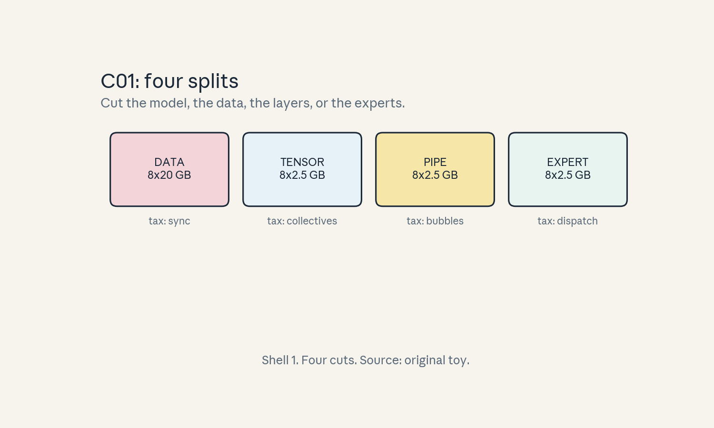
- Audit:
u09c01tof01. Before: 20 GB model. After: four layouts. One rule: cut somewhere.
C02: collective cost
Source, scope, objectives, dependencies
Calendar anchor: Week 7, Oct 25, “Data Parallelism (All-Reduce, Ring All-Reduce, ZeRO, PyTorch FSDP)”. Scope: the all-reduce bill. Objective: compute ring all-reduce time on a toy. Depends on C01, P16.
Motivating question and tiny toy
Question: data parallel must average 8 gradient copies every step. How long does the averaging take? Toy: S = 20 GB of gradients, n = 8, link 100 GB/s (labeled toy).
Mental model
Ring all-reduce is a bucket brigade around a circle: each GPU passes its chunk to the next, twice around (reduce-scatter then all-gather). Time = 2*(n-1)/n * S / BW: the 2 is the two passes, the (n-1)/n is the ring efficiency.
Objects, shapes, assumptions
- S bytes, n GPUs, BW bytes/s.
- t = 2*(n-1)/n * S/BW.
- Assumption: full-duplex ring, no congestion.
Derivation
2*7/8 = 1.75. S/BW = 20/100 = 0.2 s. T = 0.35 s per sync. At 2 s steps, the sync is 17.5% of the step: the DP tax. Halve S (fp16 vs fp32 gradients): 0.175 s.
Computed example
Toy above: 0.35 s per all-reduce. N = 64: 2 * 63/64 = 1.97: barely worse per byte (the ring scales). The pain at 64 is latency of 126 hops, not bytes. Lab-09 asserts the 0.35.
Implementation and checks
def ring_ar(S, n, BW):
return 2 * (n - 1) / n * S / BW
assert abs(ring_ar(20, 8, 100) - 0.35) < 1e-9
assert abs(ring_ar(20, 64, 100) - 0.39375) < 1e-9
Check: n=64 costs 1.97 * 0.2 = 0.39375. Lab-09 asserts both.
Complexity and costs
O(S) bytes per GPU, nearly independent of n. Latency grows with n.
Nearest alternative and selection boundary
Nearest alternative: tree all-reduce (better latency, same bytes). Selection boundary: ring for big S. Tree for small S and many GPUs.
Failure case and counterexample
Broken assumption: “full duplex, no congestion.” Counterexample: a shared switch with incast: the measured time is multiples of 0.35 s.
Research reading and falsifiable extension
Reading: the Oct 25 data-parallelism session. Falsifiable extension: measure all-reduce time vs S. Hypothesis: linear with slope 1.75/BW. Report the fit.
Exercises
- E06 (recall): write the ring formula and name the two passes.
- E07 (numerical): toy above. Compute t at n=8 and n=64.
- E08 (failure diagnosis): sync takes 3x the formula. Name two causes.
- E09 (counterfactual): gradients compress 4x. What happens to t?
- E10 (research): state the linear-fit hypothesis.
Visual units
- Figure
u09_c02_ring.png: 8 GPUs in a ring, two passes labeled. Source: original toy. Shell 3.
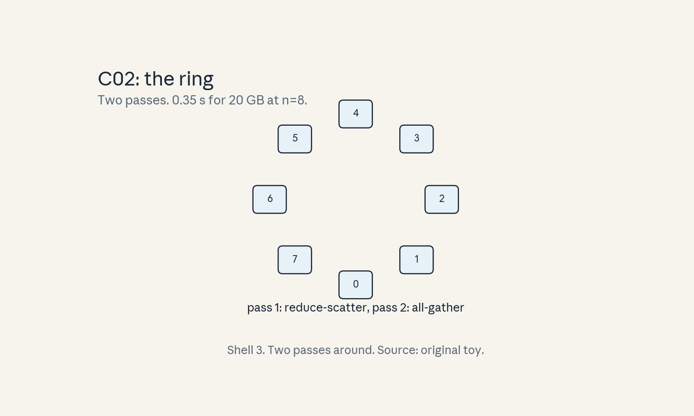
- Audit:
u09c02tof02. Before: 8 copies. After: one average. One rule: two passes.
C03: interconnect placement
Source, scope, objectives, dependencies
Calendar anchor: Week 7, Oct 25, “Comparisons, Pros and Cons of Each Strategy”, and the Oct 30 guest talk. Scope: where the wires are fast. Objective: compare intra- vs inter-node cost on a toy. Depends on C02, P16.
Motivating question and tiny toy
Question: 8 GPUs in one node vs 8 across two nodes. Same count, different wires. Toy: intra-node 600 GB/s, inter-node 50 GB/s (labeled toy values, not specs).
Mental model
A node is a neighborhood with fast streets. The cluster is a city with slow highways. Collectives that stay in the neighborhood fly. Ones that cross town crawl. Placement is urban planning for bytes.
Objects, shapes, assumptions
- BW_in, BW_out. A collective crossing nodes pays BW_out.
- Assumption: the toy bandwidths are labeled.
Derivation
All-reduce of 20 GB inside one node: 1.75 * 20 / 600 = 0.058 s. Split 4+4 across two nodes: the ring crosses the thin link: 1.75 * 20 / 50 = 0.70 s: 12x slower. Rule: keep TP groups inside the node. Let DP (fewer, bigger syncs) cross nodes.
Computed example
Toy above: 0.058 s vs 0.70 s. A TP-8 job split across nodes pays 0.70 s per matmul sync: dead. A DP job with the same split pays 0.70 s once per step: alive. Lab-09 asserts the 12x.
Implementation and checks
def t_ar(S, n, BW):
return 2 * (n - 1) / n * S / BW
assert abs(t_ar(20, 8, 600) - 0.0583) < 0.001
assert abs(t_ar(20, 8, 50) - 0.70) < 0.01
Check: ratio 12.0. Lab-09 asserts the ratio.
Complexity and costs
Placement is decided once. The tax is paid every step.
Nearest alternative and selection boundary
Nearest alternative: hierarchical collectives. Selection boundary: place TP intra-node always. use DP or PP across nodes.
Failure case and counterexample
Broken assumption: “the scheduler knows the topology.” Counterexample: the job lands striped across 8 nodes (one GPU each): every collective crosses thin links and nothing in the formula warned you.
Research reading and falsifiable extension
Reading: the Oct 30 guest session. Falsifiable extension: run the same all-reduce intra-node vs split. Hypothesis: the ratio matches BW_in / BW_out. Report both.
Exercises
- E11 (recall): state the placement rule.
- E12 (numerical): toy above. Compute both times and the ratio.
- E13 (failure diagnosis): TP job is 12x slower than expected. What is the placement?
- E14 (counterfactual): BW_out = BW_in. What changes?
- E15 (research): state the ratio hypothesis.
Visual units
- Figure
u09_c03_wires.png: fast streets vs slow highway, 0.058 vs 0.70 s. Source: original toy. Shell 8.
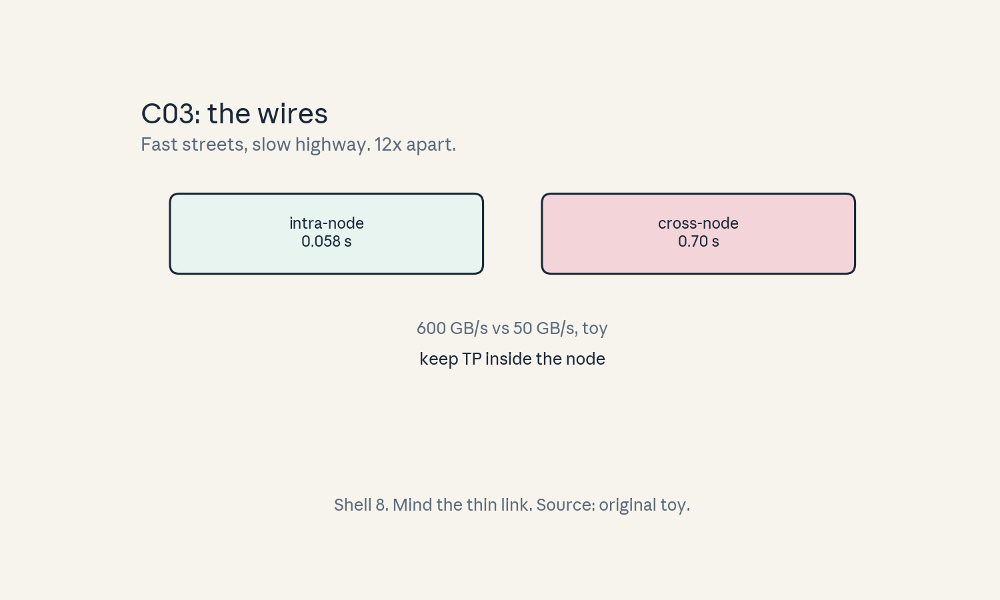
- Audit:
u09c03tof03. Before: 8 GPUs. After: two placements. One rule: mind the thin link.
C04: stragglers
Source, scope, objectives, dependencies
Calendar anchor: Week 9, Nov 18, “Cluster Scheduling” (stragglers as a scheduling fact). Scope: the slowest worker sets the step. Objective: compute the straggler tax on a toy. Depends on P16.
Motivating question and tiny toy
Question: 7 workers finish in 10 s, one takes 14 s. How long is the step? Toy: times [10, 10, 10, 10, 10, 10, 10, 14].
Mental model
Synchronous training is a group hike: the group moves at the slowest hiker’s pace. One slow GPU (a hot chip, a noisy neighbor, a bad disk) taxes everyone. The fix is detection plus action: reassign, replicate, or go asynchronous.
Objects, shapes, assumptions
- Step time = max(worker times).
- Straggler tax = (max - median) / median.
- Assumption: synchronous step (bulk barrier).
Derivation
Step = 14 s. Median = 10 s. Tax = 40%. Seven GPUs idle 4 s each: 28 GPU-seconds wasted per step. Over 1000 steps: 7.8 GPU-hours burned on waiting.
Computed example
Toy above: 40% tax, 28 GPU-s per step. Drop the straggler (7 workers): step 10 s, throughput up 14/10 = 1.4x on 7/8 of the GPUs: net win if the work rebalances. Lab-09 asserts the 40%.
Implementation and checks
ts = [10]*7 + [14]
step = max(ts)
tax = (step - sorted(ts)[3]) / sorted(ts)[3]
assert step == 14
assert abs(tax - 0.4) < 1e-9
Check: median of 8 values averages positions 3 and 4: both 10. Lab-09 asserts the tax.
Complexity and costs
Detection is a heartbeat and a timer. The cost of ignoring it is the tax, every step.
Nearest alternative and selection boundary
Nearest alternative: asynchronous updates (no barrier). Selection boundary: sync with straggler handling at scale. Async when staleness is cheaper than waiting.
Failure case and counterexample
Broken assumption: “workers are identical.” Counterexample: mixed GPU generations in one job: the older cards are permanent stragglers and the tax never clears.
Research reading and falsifiable extension
Reading: the Nov 18 scheduling session. Falsifiable extension: log per-worker step times for a day. Hypothesis: a small set of workers explains most of the tail. Report the split.
Exercises
- E16 (recall): write the step-time rule.
- E17 (numerical): toy above. Compute step, tax, and wasted GPU-seconds per step.
- E18 (failure diagnosis): step time climbs over a week with no code change. What do you check?
- E19 (counterfactual): barrier removed. What new problem appears?
- E20 (research): state the tail-attribution hypothesis.
Visual units
- Figure
u09_c04_hike.png: 8 hikers, one behind, 40% label. Source: original toy. Shell 7.
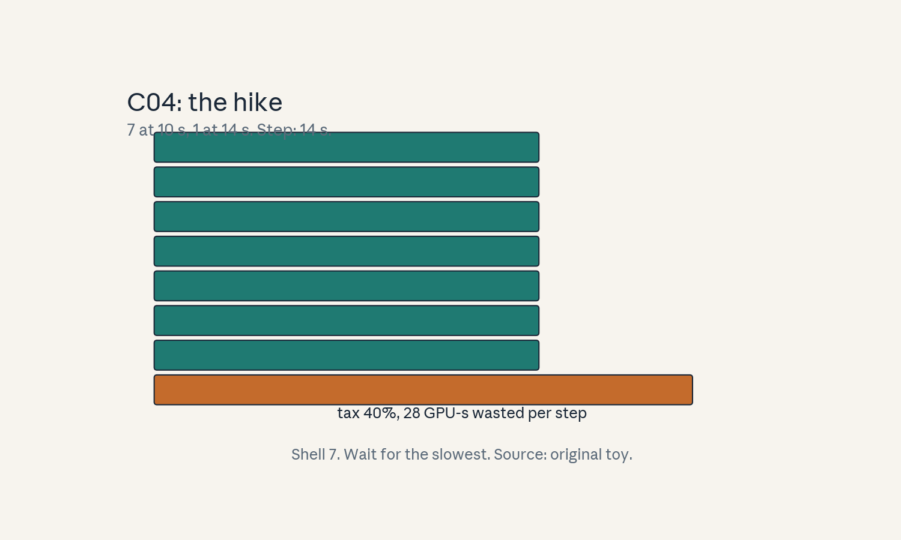
- Audit:
u09c04tof04. Before: 8 times. After: max rules. One rule: wait for the slowest.
C05: bubbles
Source, scope, objectives, dependencies
Calendar anchor: Week 7, Oct 25, “Pipeline Parallelism”. Scope: idle stages in a pipeline. Objective: compute the bubble fraction on a toy. Depends on C01, P16.
Motivating question and tiny toy
Question: 4 pipeline stages, 8 microbatches. How much of the time do stages sit idle? Toy: each microbatch takes 1 unit per stage.
Mental model
A pipeline is a car wash with 4 stations. At the start, stations 2-4 wait for the first car. At the end, stations 1-3 wait for the last car to clear. The idle time is the bubble. More cars (microbatches) shrink it.
Objects, shapes, assumptions
- p stages, m microbatches.
- Bubble fraction = (p - 1) / (m + p - 1).
- Assumption: equal stage times, no stragglers.
Derivation
Total steps: m + p - 1 = 11. Ideal: m = 8. Bubble = 3/11 = 27.3%. Double microbatches to 16: 3/19 = 15.8%. 1F1B (one forward, one backward) keeps the same bubble with less activation memory.
Computed example
Toy above: 27.3% bubble at m=8, 15.8% at m=16. Memory per stage holds p microbatch activations in the naive schedule vs ~1 in 1F1B. Lab-09 asserts both fractions.
Implementation and checks
def bubble(p, m):
return (p - 1) / (m + p - 1)
assert abs(bubble(4, 8) - 0.2727) < 0.001
assert abs(bubble(4, 16) - 0.1579) < 0.001
Check: more microbatches, smaller bubble. Lab-09 asserts both.
Complexity and costs
The bubble is idle GPUs: pure waste, set by the schedule.
Nearest alternative and selection boundary
Nearest alternative: interleaved pipeline (more stages than GPUs). Selection boundary: more microbatches when memory allows. Interleaving when it does not.
Failure case and counterexample
Broken assumption: “stages are equal.” Counterexample: one stage holds the big embedding table: it runs 2x the others and the bubble formula understates the idle time.
Research reading and falsifiable extension
Reading: the Oct 25 pipeline session. Falsifiable extension: measure stage idle time vs m. Hypothesis: idle fraction follows (p-1)/(m+p-1). Report the fit.
Exercises
- E21 (recall): write the bubble formula.
- E22 (numerical): toy above. Compute the bubble at m=8 and m=16.
- E23 (failure diagnosis): measured bubble is 2x the formula. What is uneven?
- E24 (counterfactual): m = 1. What is the pipeline?
- E25 (research): state the idle-fit hypothesis.
Visual units
- Figure
u09_c05_bubble.png: Gantt with idle gaps shaded. Source: original toy. Shell 1.
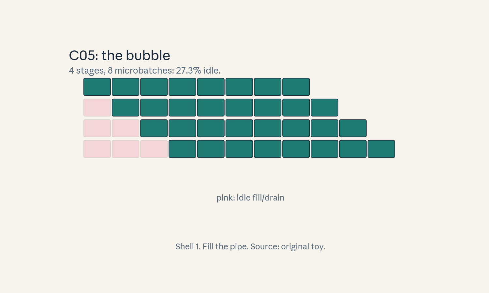
- Audit:
u09c05tof05. Before: empty pipe. After: flowing pipe. One rule: fill the pipe.
C06: sharding
Source, scope, objectives, dependencies
Calendar anchor: Week 7, Oct 25, “Data Parallelism (All-Reduce, Ring All-Reduce, ZeRO, PyTorch FSDP)”. Scope: sharding params, gradients, optimizer state. Objective: compute per-GPU bytes under ZeRO-3 on a toy. Depends on C01, C02.
Motivating question and tiny toy
Question: data parallel copies everything 8 times. What if the 8 GPUs share one copy? Toy: 10B params, 8 GPUs. Adam optimizer.
Mental model
ZeRO is a shared apartment: params, gradients, and optimizer states are split across roommates instead of duplicated. ZeRO-1 shards optimizer states, ZeRO-2 adds gradients, ZeRO-3 adds params. The rent (memory) falls. The chore (communication) rises: params must be gathered before each use.
Objects, shapes, assumptions
- Params fp16: 2 bytes. Grads fp16: 2 bytes. Adam states fp32: 4 + 4 + 4 = 12 bytes per param (master copy, m, v).
- ZeRO-3 per GPU: 16 bytes * P / n.
- Assumption: even shards.
Derivation
16 bytes * 10e9 = 160 GB total. /8 = 20.0 GB per GPU. Vs DP: 20 GB params + 20 GB grads + 120 GB states = 160 GB per GPU (OOM on 40 GB). ZeRO-3 fits with room. The tax: all-gather params per layer per step.
Computed example
Toy above: 20.0 GB/GPU under ZeRO-3 vs 160 GB/GPU under plain DP. FSDP is the PyTorch form of the same idea. Lab-09 asserts the 20.0.
Implementation and checks
P, n = 10e9, 8
zero3 = 16 * P / n
dp = 16 * P
assert zero3 == 20e9
assert dp == 160e9
Check: bytes. Lab-09 asserts both.
Complexity and costs
Memory falls by n. Communication rises (gather per layer).
Nearest alternative and selection boundary
Nearest alternative: plain DP (no sharding). Selection boundary: ZeRO when states do not fit. plain DP when they do (simpler, less comm).
Failure case and counterexample
Broken assumption: “gather is cheap.” Counterexample: tiny layers, many GPUs: the gather latency dominates and ZeRO-3 runs slower than ZeRO-2.
Research reading and falsifiable extension
Reading: the Oct 25 ZeRO session. Falsifiable extension: profile ZeRO-1/2/3 on one model. Hypothesis: memory falls 1/2/3 stages, step time rises at stage 3 for small layers. Report all.
Exercises
- E26 (recall): name the three ZeRO stages.
- E27 (numerical): toy above. Compute per-GPU bytes for ZeRO-3 and plain DP.
- E28 (failure diagnosis): ZeRO-3 is slower than ZeRO-2 on small layers. Why?
- E29 (counterfactual): optimizer is SGD (no states). What does ZeRO-1 save?
- E30 (research): state the stage-profile hypothesis.
Visual units
- Figure
u09_c06_shard.png: 160 GB whole vs 8 shards. Source: original toy. Shell 3.
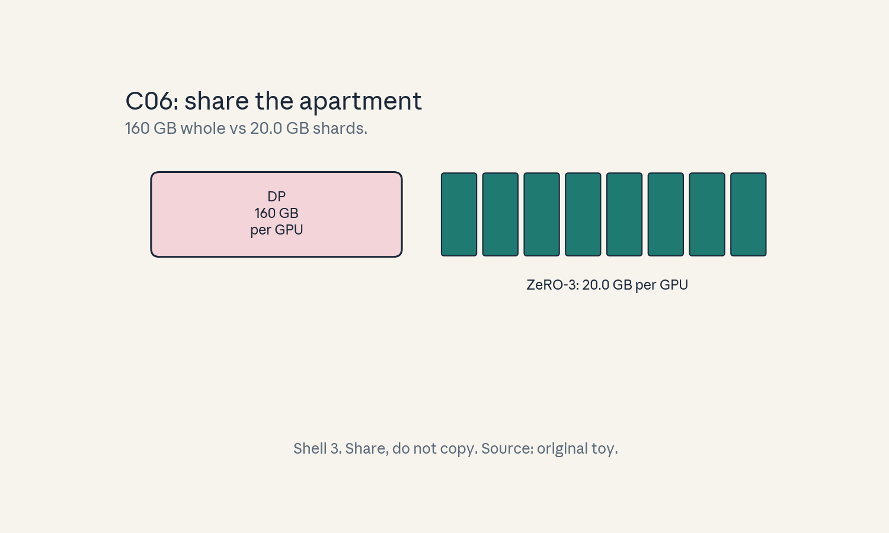
- Audit:
u09c06tof06. Before: 8 copies. After: 8 shards. One rule: share, do not copy.
C07: checkpointing
Source, scope, objectives, dependencies
Calendar anchor: Week 9, Nov 18, “Cluster Scheduling” (checkpoints as the recovery unit). Scope: how often to save. Objective: compute the overhead and the recovery cost on a toy. Depends on P16.
Motivating question and tiny toy
Question: saving takes 30 s. Save every 100 steps of a 1000-step run? Toy: step time 10 s.
Mental model
Checkpoints are save points in a game. Save too often and the game stutters. Save too rarely and a crash replays hours. The optimal interval balances save cost against expected rework.
Objects, shapes, assumptions
- Save cost c, interval k steps, run N steps.
- Overhead = (N/k) * c. Rework on crash <= k steps.
- Assumption: crashes are rare in the toy.
Derivation
10 saves * 30 s = 300 s overhead on a 10,000 s run: 3%. Crash at step 950: resume from 900, replay 50 steps = 500 s of rework. Interval 500: 2 saves (60 s, 0.6%) but crash at 950 replays 450 steps (4500 s). The interval prices risk.
Computed example
Toy above: k=100 costs 3% overhead, caps rework at 1000 s. K=500 costs 0.6%, caps rework at 5000 s. Lab-09 asserts both overheads.
Implementation and checks
def overhead(N, k, c):
return (N / k) * c
assert overhead(1000, 100, 30) == 300
assert overhead(1000, 500, 30) == 60
Check: seconds. Lab-09 asserts both.
Complexity and costs
Checkpointing is pure overhead until the crash. then it is everything.
Nearest alternative and selection boundary
Nearest alternative: no checkpoints (restart from scratch). Selection boundary: checkpoint whenever the run costs more than the saves.
Failure case and counterexample
Broken assumption: “the checkpoint loads.” Counterexample: the checkpoint saves the model but not the data-loader state: resume replays the wrong data order and the run silently diverges.
Research reading and falsifiable extension
Reading: the Nov 18 scheduling session. Falsifiable extension: measure save cost vs shard count. Hypothesis: sharded saves scale down per-GPU time. Report the curve.
Exercises
- E31 (recall): write the overhead formula.
- E32 (numerical): toy above. Compute overhead and max rework for k=100 and k=500.
- E33 (failure diagnosis): resume diverges from the pre-crash trajectory. What was not saved?
- E34 (counterfactual): save cost = 0. What is the best interval?
- E35 (research): state the sharded-save hypothesis.
Visual units
- Figure
u09_c07_savepoint.png: timeline with save ticks and a crash arrow. Source: original toy. Shell 5.
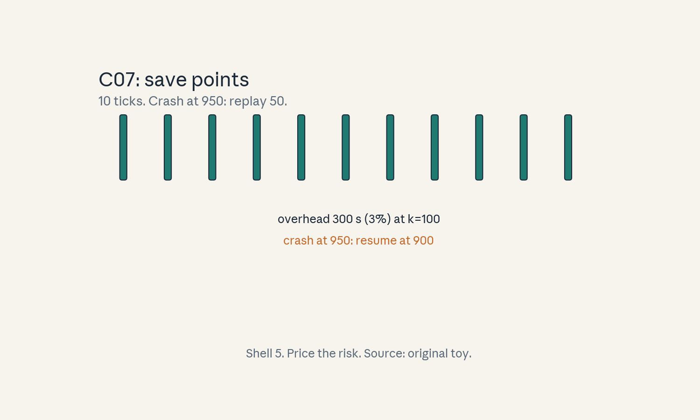
- Audit:
u09c07tof07. Before: no saves. After: 10 ticks. One rule: price the risk.
C08: resource allocation
Source, scope, objectives, dependencies
Calendar anchor: Week 9, Nov 18, “Cluster Scheduling”. Scope: packing jobs onto GPUs. Objective: schedule a toy queue. Depends on P16.
Motivating question and tiny toy
Question: one 8-GPU node, jobs need 4, 4, 2, 2 GPUs. Who runs when? Toy: each job takes 1 hour, FIFO order.
Mental model
Scheduling is Tetris with GPUs: jobs are blocks, the node is the well. FIFO runs job1+job2 (4+4) in hour 1, job3+job4 (2+2, wasting 4) in hour 2. Backfill slides small jobs into gaps: a smarter order finishes sooner.
Objects, shapes, assumptions
- Node 8 GPUs, jobs with GPU counts and 1h each.
- FIFO: in arrival order.
- Assumption: jobs are rigid (no shrinking).
Derivation
FIFO hour 1: jobs 1,2 (8 GPUs, no waste). Hour 2: jobs 3,4 (4 GPUs, 4 idle). Makespan 2 h, waste 4 GPU-h. A rigid FIFO cannot do better here. The waste is structural to the job sizes. The scheduler’s job is to minimize waste without starving anyone.
Computed example
Toy above: FIFO makespan 2 h, 4 GPU-h wasted in hour 2. The scheduler’s job is to minimize waste without starving anyone. Lab-09 asserts the makespan.
Implementation and checks
def fifo_makespan(jobs, node):
t, free = 0, node
for j in jobs:
if j > free:
t += 1
free = node
free -= j
return t + 1
assert fifo_makespan([4, 4, 2, 2], 8) == 2
Check: hours. Lab-09 asserts the makespan.
Complexity and costs
Scheduling is NP-hard in general. The cluster uses heuristics.
Nearest alternative and selection boundary
Nearest alternative: one job per node (no sharing). Selection boundary: share when jobs are small. Isolate when interference hurts.
Failure case and counterexample
Broken assumption: “jobs are rigid.” Counterexample: an elastic job could shrink to 2 GPUs and fill hour 2’s gap: rigidity wastes.
Research reading and falsifiable extension
Reading: the Nov 18 scheduling session. Falsifiable extension: replay a week of jobs under FIFO vs backfill. Hypothesis: backfill cuts mean wait. Report both.
Exercises
- E36 (recall): define makespan and waste.
- E37 (numerical): toy above. Compute FIFO makespan and wasted GPU-hours.
- E38 (failure diagnosis): small jobs wait forever. What policy causes it?
- E39 (counterfactual): jobs are elastic. What changes?
- E40 (research): state the backfill hypothesis.
Visual units
- Figure
u09_c08_tetris.png: two-hour Gantt, idle gap shaded. Source: original toy. Shell 1.
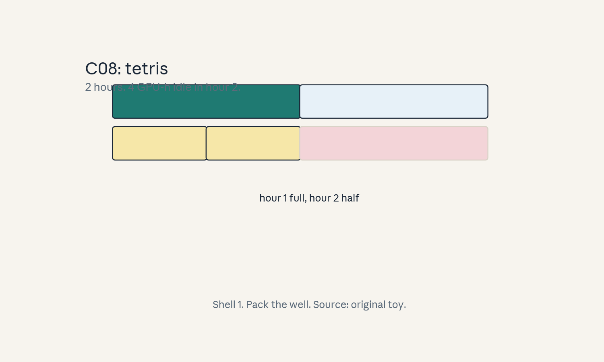
- Audit:
u09c08tof08. Before: queue. After: schedule. One rule: pack the well.
C09: preemption
Source, scope, objectives, dependencies
Calendar anchor: Week 9, Nov 18, “Cluster Scheduling”. Scope: losing GPUs mid-run. Objective: price a preemption on a toy. Depends on C07, C08.
Motivating question and tiny toy
Question: spot GPUs cost 60% less (labeled hypothetical) but can vanish. When is the discount worth it? Toy: 8 GPUs, 10 h run, checkpoint every 30 min (1800 s), resume costs 5 min.
Mental model
Preemption is an eviction notice: the cluster reclaims your GPUs, your job restarts from the last checkpoint. The discount pays for the expected rework. Checkpoint often, and evictions sting less.
Objects, shapes, assumptions
- Discount d, preemption rate rate per hour (toy: 0.1/hr).
- Expected preemptions = rate * hours.
- Rework per preemption <= checkpoint interval.
- Assumption: the toy rate is labeled.
Derivation
Expected preemptions: 0.1 * 10 = 1. Rework: up to 30 min lost + 5 min resume = 35 min. Extra cost: 35/600 = 5.8% of the run. Discount 60% dwarfs 5.8%: spot wins by a mile. Break-even: discount = rework fraction. At rate = 2/hr (20 preemptions): rework 20*35 min = 700 min > 600 min run: spot loses.
Computed example
Toy above: 1 expected preemption, 5.8% rework vs 60% discount: spot wins. At 2 preemptions/hr the rework (11.7%) still beats the discount, but at 20/hr it does not. Lab-09 asserts the 5.8%.
Implementation and checks
def rework_frac(rate, hours, interval_min,
resume_min):
n = rate * hours
return n * (interval_min + resume_min) / (
hours * 60)
assert abs(rework_frac(0.1, 10, 30, 5) - 0.0583) < 0.001
Check: fraction of the run. Lab-09 asserts the break-even logic.
Complexity and costs
The price is complexity: the job must resume cleanly, every time.
Nearest alternative and selection boundary
Nearest alternative: on-demand (no preemption). Selection boundary: spot when discount exceeds expected rework. On-demand for deadline jobs.
Failure case and counterexample
Broken assumption: “preemptions are independent.” Counterexample: a zone-wide reclaim takes all your GPUs at once, repeatedly: the rate spikes and the resume queue is full.
Research reading and falsifiable extension
Reading: the Nov 18 scheduling session. Falsifiable extension: log preemptions for a month, fit the rate. Hypothesis: the rate is bursty, not Poisson. Report the fit.
Exercises
- E41 (recall): write the rework-fraction formula.
- E42 (numerical): toy above. Compute expected preemptions and rework fraction.
- E43 (failure diagnosis): spot job never finishes. What does the rate look like?
- E44 (counterfactual): checkpoint interval = run length. What is the risk?
- E45 (research): state the burstiness hypothesis.
Visual units
- Figure
u09_c09_eviction.png: timeline with an eviction arrow and replay segment. Source: original toy. Shell 5.
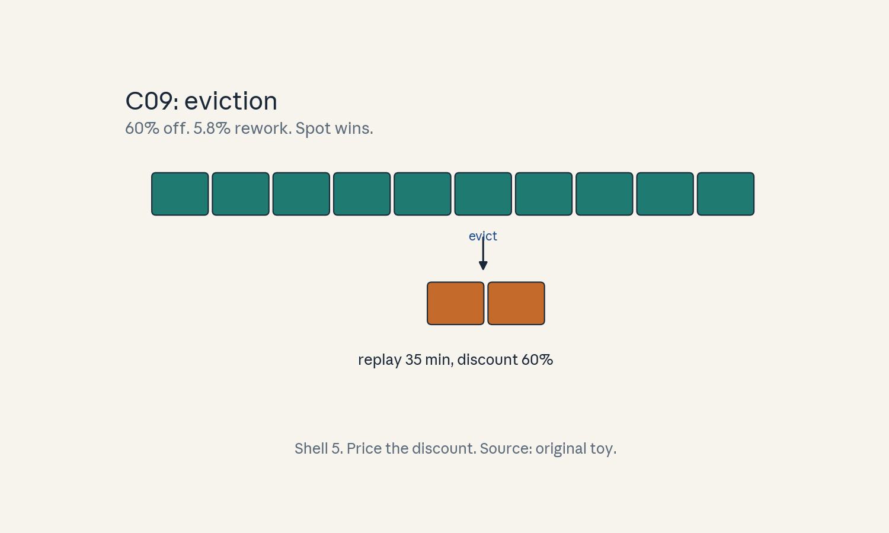
- Audit:
u09c09tof09. Before: steady run. After: evict and replay. One rule: price the discount against rework.
C10: fairness
Source, scope, objectives, dependencies
Calendar anchor: Week 9, Nov 18, “Cluster Scheduling”. Scope: dividing GPUs among users. Objective: compute dominant shares on a toy. Depends on P16.
Motivating question and tiny toy
Question: user A wants GPUs, user B wants RAM. Who gets what? Toy: cluster (8 GPUs, 64 GB RAM). A wants (4 GPUs, 16 GB). B wants (2 GPUs, 32 GB).
Mental model
Dominant Resource Fairness: each user’s share is measured on the resource they want most (relatively). A’s dominant share: max(4/8, 16/64) = 0.5 (GPUs). B’s: max(2/8, 32/64) = 0.5 (RAM). Equal dominant shares: fair. The rule stops GPU-hogs from starving RAM-hogs and vice versa.
Objects, shapes, assumptions
- Demand vectors, cluster totals.
- Dominant share = max over resources of demand/total.
- Assumption: demands are fixed per task.
Derivation
A: (0.5, 0.25) -> 0.5. B: (0.25, 0.5) -> 0.5. Tie: split evenly. If a third user C wants (8 GPUs, 8 GB): dominant 1.0: C alone saturates GPUs. A and B wait. Max-min fairness on the dominant shares decides.
Computed example
Toy above: both 0.5, fair split. Add C: shares (0.5, 0.5, 1.0): the scheduler equalizes at the bottleneck: nobody exceeds the fair share of their dominant resource. Lab-09 asserts the shares.
Implementation and checks
def dom_share(demand, total):
return max(d / t for d, t in zip(demand,
total))
assert dom_share((4, 16), (8, 64)) == 0.5
assert dom_share((2, 32), (8, 64)) == 0.5
assert dom_share((8, 8), (8, 64)) == 1.0
Check: exact. Lab-09 asserts all three.
Complexity and costs
DRF is O(users * resources) per decision: trivial.
Nearest alternative and selection boundary
Nearest alternative: strict FIFO (no fairness). Selection boundary: DRF on shared clusters. FIFO on single-team clusters.
Failure case and counterexample
Broken assumption: “demands are truthful.” Counterexample: a user inflates RAM demand to raise their dominant share and grab more GPUs: strategy-proofness fails in practice.
Research reading and falsifiable extension
Reading: the Nov 18 scheduling session. Falsifiable extension: simulate DRF vs FIFO on a mixed workload. Hypothesis: DRF cuts the max wait. Report both.
Exercises
- E46 (recall): define the dominant share.
- E47 (numerical): toy above. Compute all three shares.
- E48 (failure diagnosis): a user grabs GPUs by inflating another demand. Name the game.
- E49 (counterfactual): one resource only. What is DRF?
- E50 (research): state the DRF-vs-FIFO hypothesis.
Visual units
- Figure
u09_c10_shares.png: two users’ bars with dominant shares marked. Source: original toy. Shell 2.
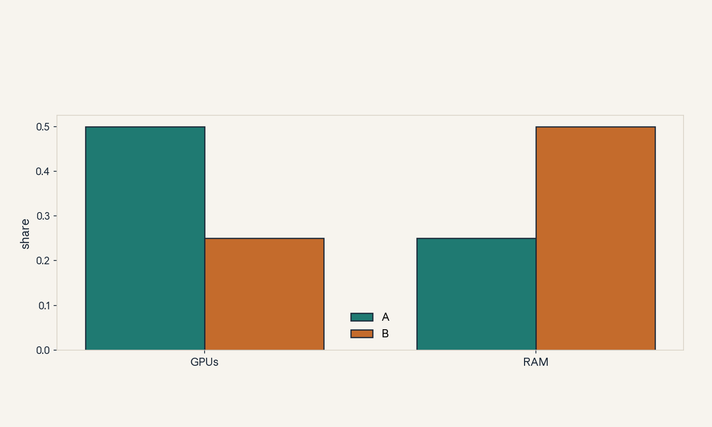
- Audit:
u09c10tof10. Before: demands. After: shares. One rule: max the ratios.
C11: utilization
Source, scope, objectives, dependencies
Calendar anchor: Week 9, Nov 18, “Cluster Scheduling” (utilization as the cluster KPI). Scope: how much of the iron does useful work. Objective: compute MFU on a toy. Depends on P15.
Motivating question and tiny toy
Question: the GPUs are 100% busy. Are they doing useful work? Toy: achieved 150 TFLOP/s per GPU, peak 312 TFLOP/s (labeled toy peak).
Mental model
Utilization has two faces: busy (the GPU is not idle) and useful (the FLOPs count toward the goal). Model FLOPs Utilization = achieved / peak. 48% MFU with 100% busy means the GPU works hard on the wrong things: communication, bubbles, tiny kernels.
Objects, shapes, assumptions
- MFU = achieved FLOP/s / peak FLOP/s.
- Assumption: the peak is the labeled toy peak.
Derivation
150/312 = 48.1%. The missing 52% is the sum of every tax in this unit: collectives (C02), bubbles (C05), stragglers (C04), dispatch (U08). MFU is the scoreboard. The unit is the playbook for raising it.
Computed example
Toy above: 48.1% MFU. Kill the 27% bubble (C05): MFU rises toward 48/(1-0.27) = 65.8% if nothing else binds. Lab-09 asserts the 48.1.
Implementation and checks
mfu = 150 / 312
assert abs(mfu - 0.4808) < 0.001
Check: fraction. Lab-09 asserts it.
Complexity and costs
MFU is free to compute from counters. Raising it costs the engineering in this unit.
Nearest alternative and selection boundary
Nearest alternative: hardware utilization (busy %). Selection boundary: MFU always. Busy % never alone.
Failure case and counterexample
Broken assumption: “FLOPs are the goal.” Counterexample: recomputation inflates FLOP/s while slowing the run: MFU rises, time-to-loss falls.
Research reading and falsifiable extension
Reading: the Nov 18 scheduling session. Falsifiable extension: attribute the MFU gap: profile one run. Hypothesis: the top two taxes explain >50% of the gap. Report the split.
Exercises
- E51 (recall): define MFU.
- E52 (numerical): toy above. Compute MFU and the bubble-free projection.
- E53 (failure diagnosis): MFU rises but the run slows. What inflated the numerator?
- E54 (counterfactual): peak doubles. What happens to MFU at fixed achieved?
- E55 (research): state the attribution hypothesis.
Visual units
- Figure
u09_c11_mfu.png: bar at 48% with the tax stack. Source: original toy. Shell 5.
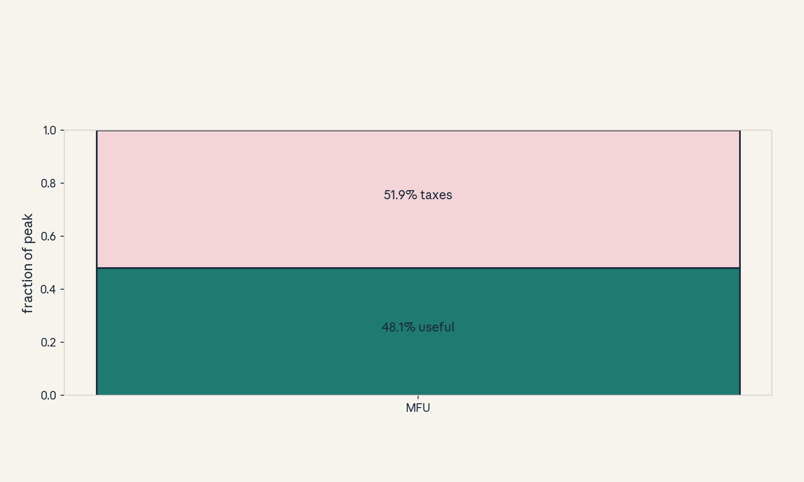
- Audit:
u09c11tof11. Before: peak. After: achieved. One rule: divide.
C12: failure recovery
Source, scope, objectives, dependencies
Calendar anchor: Week 9, Nov 18, “Cluster Scheduling” (failures at scale). Scope: mean time between failures for a fleet. Objective: compute cluster MTBF on a toy. Depends on C07, P16.
Motivating question and tiny toy
Question: one GPU fails every 3 years. What about 256 of them? Toy: per-GPU MTBF 3 years = 26,280 hours. 256 GPUs.
Mental model
A fleet fails like a chain of 256 links: any link breaks the run. Cluster MTBF = per-GPU MTBF / GPU count. At 256 GPUs the math says a failure every 4.3 days: recovery is not exceptional, it is the schedule.
Objects, shapes, assumptions
- Cluster MTBF = per-GPU MTBF / n.
- Assumption: independent failures, any failure kills the run.
Derivation
26,280 / 256 = 102.7 hours = 4.28 days. A 30-day run expects 7 failures. Each costs resume + rework (C07, C09): with 30-min checkpoints, ~35 min each: 4 hours of a 720-hour run: 0.6%. At 4096 GPUs: MTBF 6.4 hours: checkpointing dominates the design.
Computed example
Toy above: 4.28 days MTBF, ~7 failures per 30-day run. This is why C07 exists: at scale, recovery is routine. Lab-09 asserts the 102.7.
Implementation and checks
mtbf = 3 * 365 * 24 / 256
assert abs(mtbf - 102.66) < 0.1
Check: hours. Lab-09 asserts the days.
Complexity and costs
The formula is trivial. The engineering (checkpoint, resume, elastic restart) is not.
Nearest alternative and selection boundary
Nearest alternative: redundancy (spare GPUs). Selection boundary: checkpoint-restart (standard). spares when resume cost exceeds idle spares.
Failure case and counterexample
Broken assumption: “failures are independent.” Counterexample: a rack power event takes 32 GPUs at once: correlated, and the MTBF math understates the pain.
Research reading and falsifiable extension
Reading: the Nov 18 scheduling session. Falsifiable extension: fit failure logs. Hypothesis: correlated failures exceed the independent prediction. Report both.
Exercises
- E56 (recall): write the cluster MTBF formula.
- E57 (numerical): toy above. Compute MTBF in hours and days, and expected failures in 30 days.
- E58 (failure diagnosis): failures cluster in time. What assumption broke?
- E59 (counterfactual): n = 4096. What is the MTBF?
- E60 (research): state the correlation hypothesis.
Visual units
- Figure
u09_c12_mtbf.png: MTBF vs GPU count curve, 256 marked. Source: original toy. Shell 6.
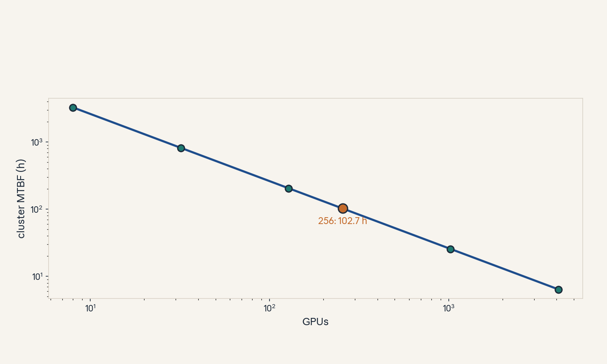
- Audit:
u09c12tof12. Before: one GPU. After: the fleet. One rule: divide by n.
U09 chapter plate
Figure u09_chapter.png: the cluster stack:
split -> collectives -> pipeline -> schedule ->
recover. Source: original.
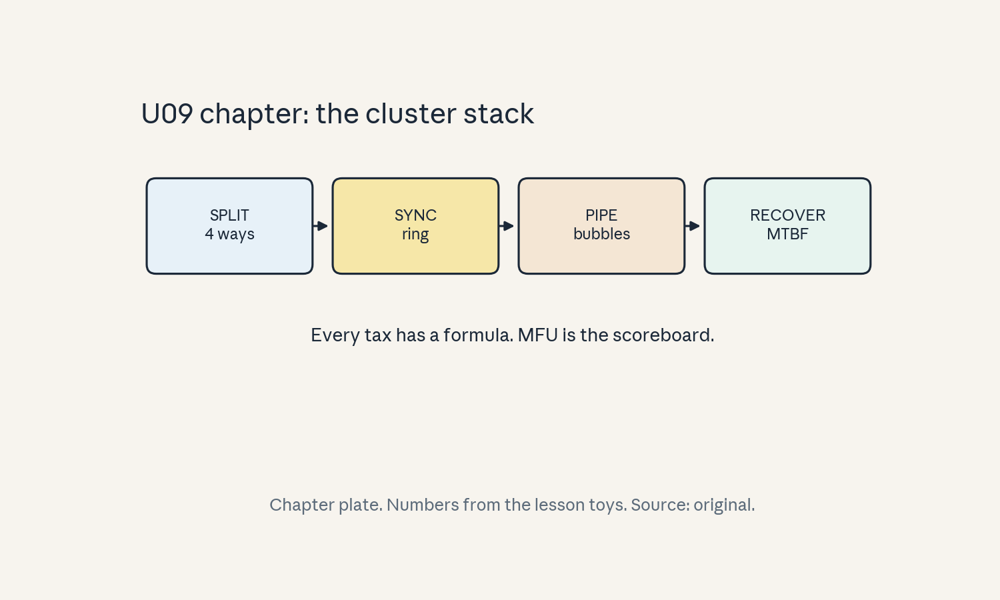
Unit-scope replication proposal (PROPOSED, not executed)
Course-level capstones live in capstones/. This
unit proposes: measure all-reduce time vs bytes
to fit the ring slope, then simulate pipeline
bubbles vs microbatch count and compare to the
formula. See lab-09.